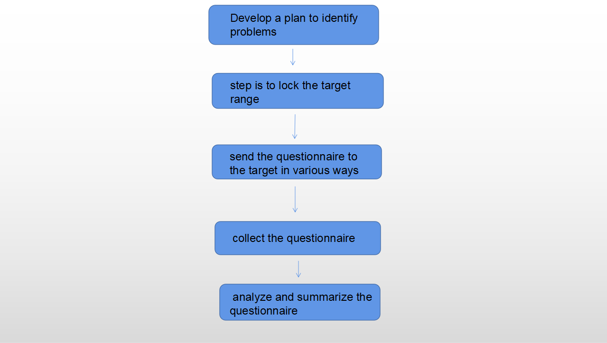

For the questionnaire, we should first make a plan.
the second step is to lock the target range.
the third step is to send the questionnaire to the target in various ways.
the fourth step is to collect the questionnaire.
the fifth step is to analyze and summarize the questionnaire.